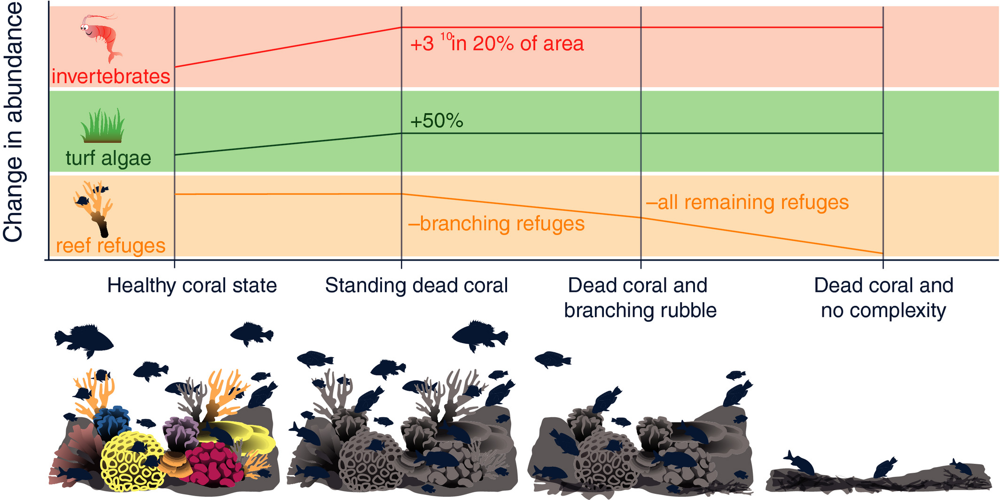

Fish and seafood are dietary cornerstones for Filipinos. The Philippines consumes ~40 kg of fish per person annually, making it the top source of animal protein.
In the Philippines, seafood is a cheap and accessible source of protein, rich in micronutrients, such as iron, zinc, vitamin A, and omega 3 fatty acids. As such, seafood has significant potential to contribute towards alleviating food insecurity, malnutrition, stunting, and cardiovascular disease, while strengthening the immune system and improving maternal and childhood health outcomes.
Fish consumption provides docosahexaenoic acid (DHA), an omega-3 fatty acid essential for brain development in infants and cognitive function in adults. Adequate intake during pregnancy and early childhood is linked to improved cognitive outcomes.
Also, regular fish consumption (≥2 servings/week) is linked to 20% lower depression risk and improved cognitive function. Omega-3 fatty acids (DHA/EPA) reduce neuroinflammation and support neurotransmitter activity.
Algae (including phytoplankton) generate 50-80% of Earth's oxygen through photosynthesis—more than all rainforests combined.
This oxygen supports life both in oceans and on land, contributing significantly to air quality and respiratory health. Their oxygen production also drives the global carbon cycle, which indirectly moderates climate and associated respiratory stressors
Like as stated in the previous page, seafood is an important source of protein in the Filipino diet, accounting for 42.2% of total animal protein intake and 18.3% of total protein intake. Accordingly, the Philippines has long
been ranked among the top 10 fish producing countries in the world, with the various fishery sectors a strategically important factor both in terms of food security.
Yet, despite the cultural, livelihood, and food-related importance of fisheries; it has been subject to overexploitation due to lax policies surrounding it. Even more so that in one of our EEZ, the West Philippine Sea—"a certain other country" is the one doing it for their own benefit. Overextending their sovereignity, harming our environment with massive clamshell harvesting, overfishing, and underwater oil and gas exploration. Continued illegal activities in our economic zones, while unseen under the waves, deals a hard blow to the millions of Filipinos in coastal areas.
Regarding water security it has been discovered that microplastics has been contaminating our waters. One example is the Laguna de Bay which is the largest lake in the country. A study conducted there suggests that prevalent microplastics in the area may pose a threat to water quality and food chain the area. The researchers also advise using biodegradable substitutes in place of plastic. Personally, as someone familiar with the area (my province), locals have noted that the rate and quantity of fishes has been dropping ever since factories started to appear.
The ocean absorbs around 26% of all human-induced carbon dioxide (a greenhouse gas responsible for climate change), causing an alteration in seawater chemistry called ocean acidification. It presents a serious threat to marine life, ecosystem health and people whose livelihoods depend on the ocean.
Ocean acidification also hinders the growth of shelled organisms (crabs, shrimps, and lobsters) and coral reefs which can cause distruptions the natural food chain and overall biodiversity loss.
Biodiversity ensures balanced food webs that helps the ecosystem to function. One of the cornerstones of marine biodiversity are coral reefs, they are necessary for about 25% of the ocean fish. With a wide size of 27,000 square kilometers and critical locations in the following Philippine provinces: Palawan (37%), Sulu (27.8%), Visayas (21.7%), Northern Luzon (7.6%), Central and Southern Mindanao (3.2%), and the Turtle Islands (1.7%), the country is home to one of the world’s largest coral reef systems being a part of the Coral Triangle.

Despite their great value, coral reefs are threatened by destruction due to coastal development, fishing methods particularly dynamite and cyanide fishing, as well as natural causes which include extremely low tide, high temperature of surface water, predation, and the mechanical action of currents and waves. If left unchecked, with the reduced variety of fishes may lead to overgrowth of algae that suffocate seagrass—eventually to the point that the algae blocks sunlight and prevent coral from growing, halting reef recovery.
A troubling decline in the Philippines’ fisheries output is raising alarms among ocean conservationists, who warn that the trend could lead to a food security crisis. PSA reported an 8.8% decline in marine municipal fisheries production, dropping from 879.96 thousand metric tons in 2023 to 802.77 thousand metric tons in 2024, the lowest since 2002. Millions of small-scale fishers could lose their livelihoods, while coastal communities — where most rely on fishing for survival — face increased risks of malnutrition.
Fisheries contribute substantially to the economic and social fibre of the Philippines, providing
employment to over 1.95 million people engaged in fish-related activities (DA-BFAR, 2020a). In 2019,
the Philippine fisheries sectors were estimated to contribute 228 billion PhP to
the national economy, comprising 1.2% of the Philippines GDP at current prices (DA-BFAR, 2020a). Hence, not only does declining fish supply affect food security, but it also impacts the viability of fishing as a form of employment and income. Still, local fishiries has no choice but compete directly for the same dwindling fish stocks.
Direct and Indirect Consequences of Biodiversity Loss
Fish Stock Depletion
In the Samar Sea, it is reported that in the last 30 years, fish catch has dropped from 8kg per day to less than 3.5kg (Samar Sea Fisheries Management Plan of 2016). 50 fish species existed in the Samar Sea in the 1980s, but only 10 remained a decade later. The degradation of the Samar Sea is linked to the increase in commercial fish and illegal practices but its impact is most felt by families who depend on the ocean for their food and livelihoods.
Collapes of Coral Reef Ecosystems
As it stands, 90% of the Philippine's reef are either in poor or fair condition. The country is struggling to conserve its marine life to illegal fishing practices and increasing plastic pollution. A report by the United Nations even predicts that by 2100, all World Heritage coral reefs will die out, including one in the country.
Species Extinction
The Philippines has one of the richest tropical marine biodiversity in the world. However, endemic species such as Philippine Dugong, Hawksbill Turtle, Whale Sharks, and other large marine animals are facing extinction due to habitat loss.
Pollution & Toxicity
Philippines generates 2.7m metric tons of plastic waste annually and disposes 20% into the ocean. These has caused disease outbreaks on the coral reef and harm to a marine species. Also, if ocean acidification worsens, increase in algal blooms may lead to cases of ciguatera fish poisoning which occurs when a person eats fish contaminated with ciguatoxins produced by microalgae that thrive in acidic waters. They can cause vomiting, weakness, or paralysis—thus, posing a growing threat to public health.
Food & Water Insecurity
As fishery production worsen, millions of Filipino in coastal communities could lose their livelihoods and source of nutrition since seafood makes up ~40% of the animal-sourced protein consumed by Filipinos. Water security is also at risk because of decline of mangrove ecosystems which improve water quality by filtering pollutants and trapping sediments from rivers and streams before they reach the ocean. Thus, making freshwater sources vulnerable which may result to higher expenses for clean water.
Economic Losses
The fisheries sector alone accounts for 1.6 million Filipino jobs and 1.3% of the Philippines’ Gross Domestic Product (GDP) yet it has high poverty rates. Decline in fish stock will prove detrimental to this population. Marine tourism, which is a highlight of our country, may also be negatively affected as coral degradation from bleaching and damaged reefs reduces tourist appeal.
Disaster Vulnerability
Coral reefs and mangroves are known to provide protection against storms and waves. Mangroves form dense thickets of knotted trunks, with thick roots reaching deep preventing coastal erosion, slow down oncoming wind and waves, and dissipate floodwaters more effectively than man-made structures. Loss of these natural defenses may prove detrimental as the Philippines continues to face an increasing number of tropical storms due to climate change and its innate location.
Ecosystem Imbalance
In tropical marine ecosystems with diverse and complex food webs, the loss of one species may go initially unnoticed by humans; however, with the loss of many species and essential habitat, eventually the integrity of the ecosystem will decline and ultimately collapse
05
Threats to Biodiversity
Overfishing
Pollution
Climate Change
Lax Policies
Invasive Species
[Reflection] Hello, my name is Rodje Mapilisan! I started doing this project around a month and a half ago. I tried to focus on the “interactive” aspect of the infographic; thus, I chose to build a website.
So, why did I choose this topic, and why focus on marine biodiversity? This is because I think that most people are unaware of what is happening to marine biodiversity because of the simple fact that “we do not see it.” Unlike the trees and the vast rice fields years ago, we somewhat feel sad seeing it cut down and reduced… but what about the seas? We simply cannot see the destruction happening down there, as it is hidden within the waves. All we know about it is sometimes the news will say that the fish stocks are reduced and the like, yet the problem goes deeper than that.
There are many threats that it faces: illegal practices, overfishing, and territorial disputes. Yet some people would just disregard the sea's importance, like a certain politician said, “Tubig lang yan, marami naman tayo niyan.” This mindset of reducing the sea's value to us feels wrong, especially as it is one of the Philippines' greatest assets. So, all in all, I just wanted to emphasize the fact that, while often overlooked, life below water is just as important as that on land. And with this project, I tried to make use of images that will highlight how beautiful the sea is and what it is that we may lose.
Fun fact: my favorite animal is the whale shark; that is why a swimming whale shark is on the first and last page.